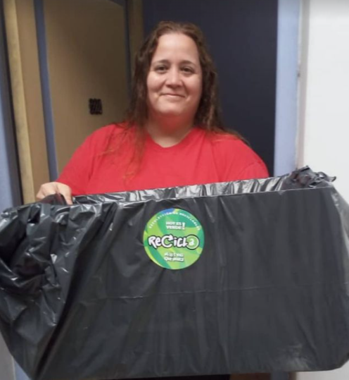

SOLICITÁ GRATIS LOS SIGUIENTES PRODUCTOS
Chipeado
El chipeado o "mulching", es el residuo de poda, triturado (ramas y hojas de árboles). Este "residuo" sirve como material orgánico seco para controlar la humedad del compost o incluso como capa cobertora en el relleno sanitario. También es una cubierta protectora del suelo. Podes pedir chipeado por este medio, por instagram o llamamndo al 08001226323.
Composteras
Una compostera es un recipiente donde se puede descomponer la materia orgánica que vamos depositando con el objetivo de obtener un abono ecológico que sirve para nutrir a nuestras plantas. Esta compostera hace una buena combinación si tenemos un jardín en nuestro hogar o un huerto ecológico.
